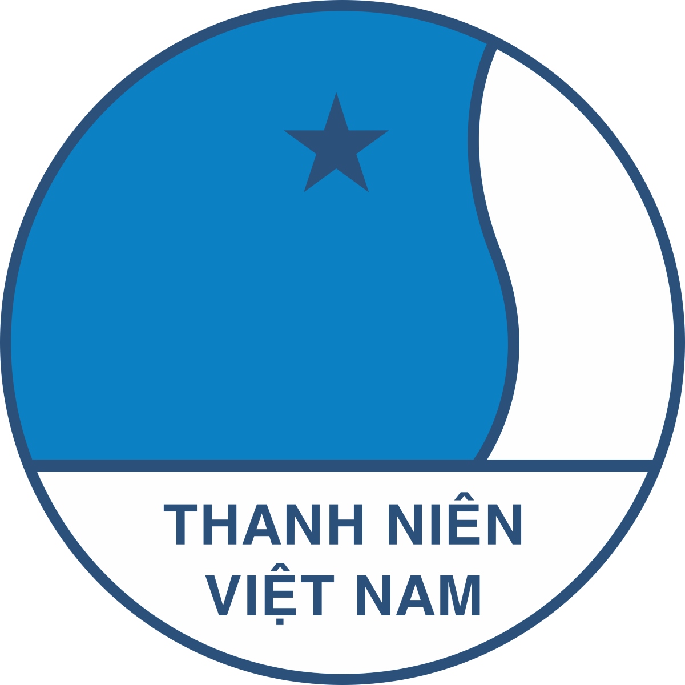
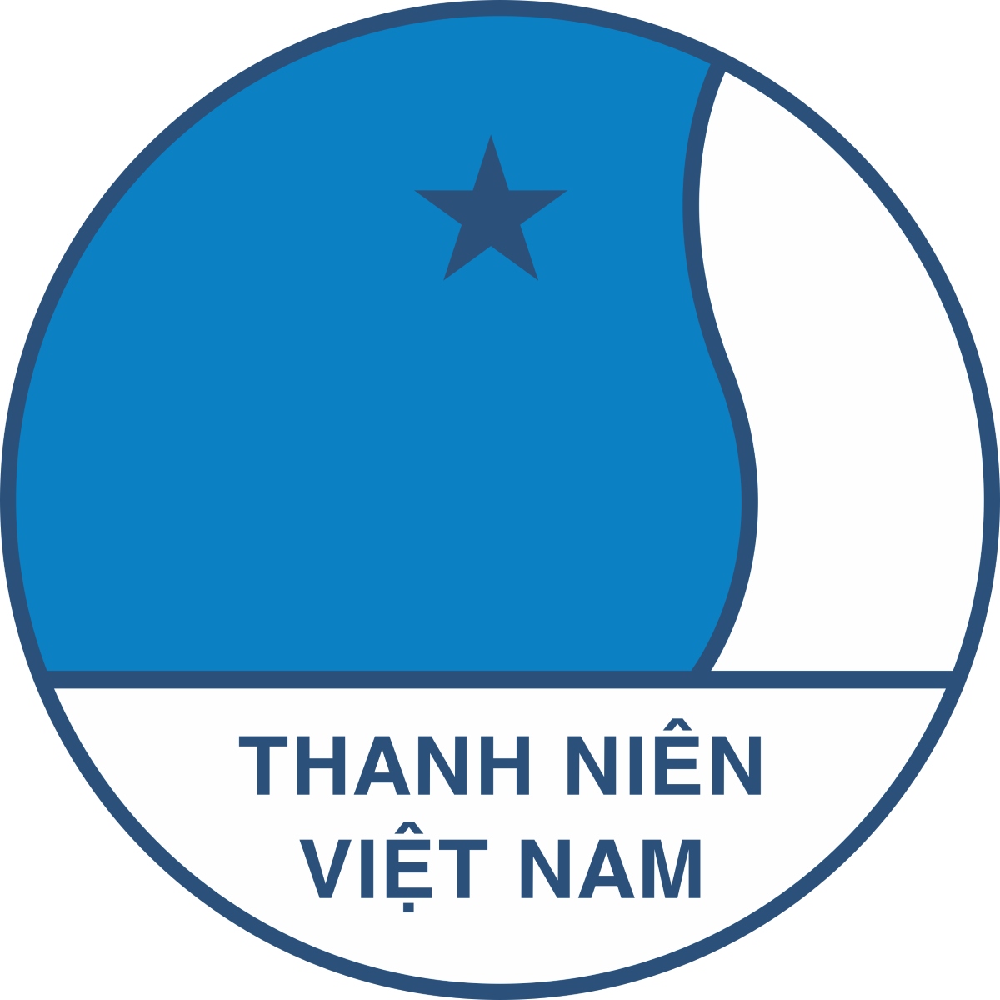

Khu du lịch xanh
Danh sách và thông tin về các khu du lịch xanh tại Củ Chi.
Địa điểm ăn uống nổi tiếng trên địa bàn
Giới thiệu các quán ăn, nhà hàng đặc sắc tại Củ Chi.
Điểm trồng cây xanh
Thông tin về các điểm trồng cây xanh tại Củ Chi.
 

Danh sách và thông tin về các khu du lịch xanh tại Củ Chi.
Giới thiệu các quán ăn, nhà hàng đặc sắc tại Củ Chi.
Thông tin về các điểm trồng cây xanh tại Củ Chi.